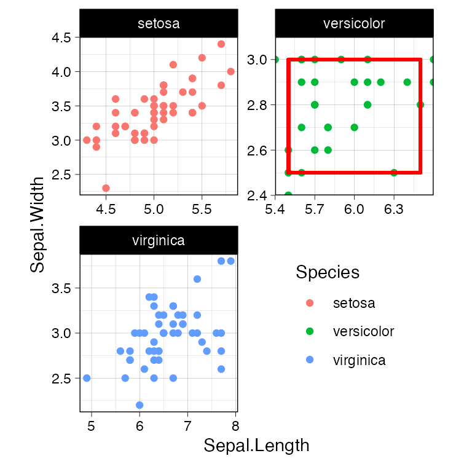

ggplot2 でファセットグラフを描いた際,
このパネルだけズームしたい, と思うことがあります.frabento::coord_panel_ranges() を作ってみました.
library(frabento) # このパッケージ
library(tidyverse) # ggplot2とtidyなデータハンドリング
library(patchwork) # ggplotを簡単, キレイにレイアウトデータセットiris (Edgar Anderson’s Iris Data) を例に,
ファセットグラフを 描いてみます.
theme_set(theme_linedraw(base_family = "Helvetica", base_line_size = 0.3) +
theme(aspect.ratio = 1/1))
# base plot
g <- iris %>%
ggplot(aes(x = Sepal.Length, y = Sepal.Width)) +
geom_point(aes(color = Species)) +
geom_rect(data = . %>% dplyr::filter(Species == "versicolor"),
xmin = 5.5, xmax = 6.5, ymin = 2.5, ymax = 3,
color = "red", size = 1, fill = NA) +
facet_wrap(~ Species, scale = "free", ncol = 2, dir = "h") +
theme(legend.position = c(0.75, 0.25))
#> Warning: Using `size` aesthetic for lines was deprecated in ggplot2 3.4.0.
#> ℹ Please use `linewidth` instead.
#> This warning is displayed once every 8 hours.
#> Call `lifecycle::last_lifecycle_warnings()` to see where this warning was
#> generated.
# zoom in versicolor panel (this is second panel)
gz <- g + coord_panel_ranges(panel_ranges = list(
list(NULL),
list(x = c(5.4, 6.6), y = c(2.4, 3.1)),
list(NULL)
))
# patchwork
g | gzggh4x が別の解法を実装しています.
g + ggh4x::facetted_pos_scales(
x = list(Species == "versicolor" ~ scale_x_continuous(limits = c(5.5, 6.5),
expand = expansion(add = c(0.1, 0.1)))),
y = list(Species == "versicolor" ~ scale_y_continuous(limits = c(2.5, 3.0),
expand = expansion(add = c(0.1, 0.1))))
)